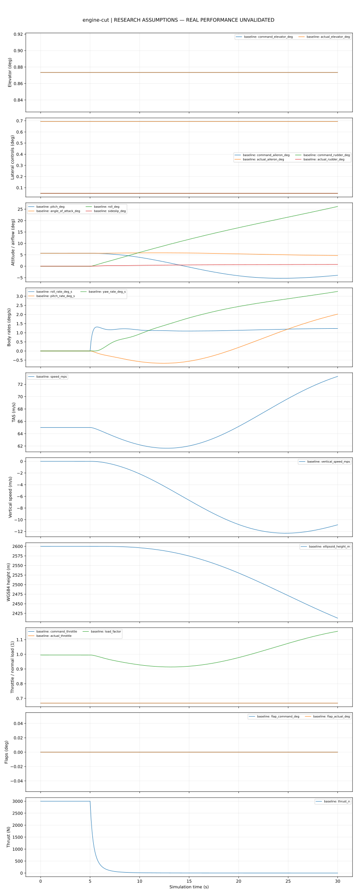

Research assumptions. Real aircraft performance unvalidated.
COMPLETE

{
"status": "COMPLETE",
"baseline": "artifacts\\navigation-physics\\engine-cut",
"candidate": null,
"conditions": {
"schema_version": 2,
"case": "engine-cut",
"duration_s": 30,
"sample_dt_s": 0.1,
"created_utc": "2026-11-18T07:25:56.398257+00:00",
"events": [
{
"time_s": 5,
"kind": "engine-cut"
}
],
"research_warning": "Development assumptions; real aircraft performance unvalidated",
"iy_scale": 1,
"units": "SI lengths/speeds/forces; API angles deg, body FRD rates deg/s; WGS84 ellipsoid height; heading clockwise from North",
"original_profile_sha256": "424117b41eadd57c4b23c79c739e535845bcef9ac391dad95c1aa15ed4575049",
"profile_sha256": "424117b41eadd57c4b23c79c739e535845bcef9ac391dad95c1aa15ed4575049",
"source_sha256": {
"Source\\FlightCore\\Aerodynamics.h": "a974e8cc1d8a6153571eafe0cac6dcdd6f41cbd187258e68db2b9380fc6c5080",
"Source\\FlightCore\\AircraftParameters.h": "60808fa00a3501907512acf685374fa14f924d860c6bb7588b55a9c4a6998cde",
"Source\\FlightCore\\FixedWing.h": "653985c75c9af01777f5a2ee124cd46a342ec42545142b540bcda17aaf19621a",
"Source\\FlightCore\\FlightCore.h": "b0e8be3da168f8cf9b2ebdd933a451739bf3fd441c489c264935fa1466d7eeaf",
"Source\\FlightCore\\FlightOperations.h": "4b9d0118a1bc42f8fd38eea9348ab144b312b043a2b0d3559cfb646c22bcdd7f",
"Source\\FlightCore\\Gimbal.h": "d0a56b0be552959869c586b0058a7a341f1236e6557282ff123781b43f7804e3",
"Source\\FlightCore\\GroundContact.h": "d5eb491fbb31f533ff79a3d233782fc03c718db85660da0b41689b41e75e119a",
"Source\\FlightCore\\Navigation.h": "0f944d41599535762b77d297663e5aa4b25012844f007d549242020f591a96db",
"Source\\FlightCore\\Propulsion.h": "3a695e29eaab604a6e649a9ab7068a331f98529b3f829a56013dffd093a99024",
"Source\\FlightCore\\StlMesh.h": "745536d0362558ad51f2fbb0231bd80f915242a0c80e876d5e2473e081772126",
"Source\\FlightCore\\TerrainSurface.h": "1540150b3d1b81ed4f1238f0ccda68f1528c914e7cc87b0695e40c698f74bb72",
"uavsim_client.py": "10ed7d26ed42f39001cab89ca566fe5fcd8e46da2001b8a58ee7f8ca9fd0fa60",
"scripts\\run-flight-test.py": "800b91f85e62bb5d754041b1befeae5b62befe087a06148615bd4a80dce0cda4",
"scripts\\serve-api.py": "86ac5c9734f05551cb2cd317f87cf88d642ded57734f1e20a2071a743d831653",
"scripts\\report-flight-test.py": "f5d4dc0cb90e4bca66b837eb83dddacd2f09ad755c90d8cdcaefb70b0ba009f1",
"Binaries\\Win64\\UnrealEditor-UAVSim.dll": "9af5978e01ac39235840f15a3764a03fdc4ec3b5c126b882c271d1d9f4f47b65"
},
"airframe": {
"id": "c208b-retractable-research-assumptions",
"profile": "aircraft/c208b-retractable-research.json",
"fingerprint": "sha1:28f8ca620257c3df7b3879976c93d19afe3d091f",
"error": "",
"dynamic_propeller": true,
"schema_version": 2,
"initial_speed_mps": 65,
"initial_height_m": 2600,
"minimum_speed_mps": 0,
"maximum_speed_mps": 110,
"minimum_height_m": -500,
"maximum_height_m": 6000,
"maximum_alpha_deg": 180,
"maximum_beta_deg": 89,
"ground_supported": true,
"navigation_supported": true,
"automation_supported": true,
"support_message": "HYPOTHETICAL retractable-gear derivative of C208B research model. Not an actual C208B configuration. REAL AIRCRAFT PERFORMANCE UNVALIDATED.",
"retractable_gear": true,
"route_minimum_speed_mps": 36,
"route_maximum_speed_mps": 75,
"landing_minimum_speed_mps": 36,
"landing_maximum_speed_mps": 44,
"maximum_flap_deg": 30
},
"initial_condition": {
"aircraft": {
"latitude_deg": 33.43299999999999,
"longitude_deg": 126.52,
"ellipsoid_height_m": 2599.9999999990687,
"heading_deg": 0,
"pitch_deg": 5.672326903403909,
"roll_deg": 0,
"simulation_time_s": 0,
"running": false,
"terrain_loaded": true,
"speed_mps": 65.00000000000001,
"vertical_speed_mps": 8.534839501805891e-16,
"time_scale": 1,
"effective_time_scale": 0,
"distance_travelled_m": 0,
"roll_rate_deg_s": 0,
"pitch_rate_deg_s": 0,
"yaw_rate_deg_s": 0,
"angle_of_attack_deg": 5.672326903403909,
"sideslip_deg": 0.010312712708274364,
"ground_speed_mps": 65,
"air_density_kg_m3": 0.9472641688488673,
"dynamic_pressure_pa": 2001.0955566932332,
"lift_coefficient": 0.7137351527929843,
"drag_coefficient": 0.05747091285463205,
"flow_separation": 0,
"stall_warning": false,
"stalled": false,
"load_factor": 0.9951034240112138
},
"controls": {
"elevator_deg": 0.8734040860073303,
"aileron_deg": 0.6936263741970601,
"rudder_deg": 0.049208270592859704,
"throttle": 0.6677512213487801
},
"actuators": {
"elevator_deg": 0.8734040860073303,
"aileron_deg": 0.6936263741970601,
"rudder_deg": 0.049208270592859704,
"throttle": 0.6677512213487801,
"thrust_n": 3000.2151353847726,
"propeller_rpm": 1660.7024226309777,
"shaft_drive_power_w": 259908.08256607462,
"shaft_load_power_w": 259908.08256607447,
"shaft_drive_torque_nm": 1494.511757499188,
"propeller_load_torque_nm": 1494.511757499187
},
"flaps": {
"command_deg": 0,
"actual_deg": 0
},
"gear": {
"command_down": true,
"extension": 1,
"down_locked": true,
"up_locked": false,
"moving": false
},
"environment": {
"wind_east_mps": 0,
"wind_north_mps": 0,
"wind_up_mps": 0
}
},
"trim_controls": {
"elevator_deg": 0.8734040860073303,
"aileron_deg": 0.6936263741970601,
"rudder_deg": 0.049208270592859704,
"throttle": 0.6677512213487801
},
"elapsed_wall_s": 15.634031900000991
},
"candidate_conditions": null,
"result": {
"ok": true,
"checks": [
"finite samples, exact time grid, profile and controller isolation"
],
"restore_errors": [],
"samples": 301,
"status": "complete",
"final_state": {
"aircraft": {
"latitude_deg": 33.44947669047343,
"longitude_deg": 126.52491986578795,
"ellipsoid_height_m": 2412.3899799166247,
"heading_deg": 49.86594876467268,
"pitch_deg": -3.977993864208733,
"roll_deg": 26.180873045960823,
"simulation_time_s": 30.000000000000156,
"running": false,
"terrain_loaded": true,
"speed_mps": 73.28236159933925,
"vertical_speed_mps": -10.866397790188197,
"time_scale": 1,
"effective_time_scale": 0,
"distance_travelled_m": 1964.0549623213296,
"roll_rate_deg_s": 1.2338061601737687,
"pitch_rate_deg_s": 2.0192825314426903,
"yaw_rate_deg_s": 3.263079893937885,
"angle_of_attack_deg": 4.685522052736893,
"sideslip_deg": 0.7841466332985851,
"ground_speed_mps": 72.47224241488397,
"air_density_kg_m3": 0.9655339104198251,
"dynamic_pressure_pa": 2592.605562431422,
"lift_coefficient": 0.6402764234700229,
"drag_coefficient": 0.052610070887686086,
"flow_separation": 0,
"stall_warning": false,
"stalled": false,
"load_factor": 1.156883727640771
},
"controls": {
"elevator_deg": 0.8734040860073303,
"aileron_deg": 0.6936263741970601,
"rudder_deg": 0.049208270592859704,
"throttle": 0.6677512213487801
},
"ground": {
"steering_deg": 0,
"brake": 0,
"parking_brake": false,
"wheel_surfaces_sampled": false,
"wheel_normal_force_n": [
0,
0,
0
],
"wheel_clearance_m": [
2065.131104305592,
2066.057694399032,
2064.2497032598635
],
"wheel_lateral_slip_mps": [
0,
0,
0
],
"applied_steering_deg": 0,
"applied_brake": 0,
"on_ground": false,
"wheels_on_ground": 0,
"height_agl_m": 2066.619206604614,
"terrain_height_m": 336.64638146944344,
"normal_force_n": 0,
"impact_speed_mps": 0,
"crashed": false,
"surface": "terrain",
"available": true
},
"gear": {
"command_down": true,
"extension": 1,
"down_locked": true,
"up_locked": false,
"moving": false
},
"automation": {
"phase": "idle",
"kind": "none",
"runway_index": -1,
"runway_name": "",
"completed": false,
"message": "Inactive",
"cross_track_m": 0,
"along_track_m": 0,
"target_height_m": 0,
"rejection": "",
"desired_course_deg": 0,
"desired_bank_deg": 0,
"desired_speed_mps": 0,
"desired_height_m": 0.27936646435409784,
"desired_climb_mps": 0,
"return_radius_m": 0,
"path": []
},
"actuators": {
"elevator_deg": 0.8734040860073303,
"aileron_deg": 0.6936263741970601,
"rudder_deg": 0.049208270592859704,
"throttle": 0.6677512213487801,
"thrust_n": 0.13132395387444773,
"propeller_rpm": 59.2476645020855,
"shaft_drive_power_w": 0,
"shaft_load_power_w": 12.029690535267562,
"shaft_drive_torque_nm": 0,
"propeller_load_torque_nm": 1.9388963349345756
},
"airframe": {
"id": "c208b-retractable-research-assumptions",
"profile": "aircraft/c208b-retractable-research.json",
"fingerprint": "sha1:28f8ca620257c3df7b3879976c93d19afe3d091f",
"error": "",
"dynamic_propeller": true,
"schema_version": 2,
"initial_speed_mps": 65,
"initial_height_m": 2600,
"minimum_speed_mps": 0,
"maximum_speed_mps": 110,
"minimum_height_m": -500,
"maximum_height_m": 6000,
"maximum_alpha_deg": 180,
"maximum_beta_deg": 89,
"ground_supported": true,
"navigation_supported": true,
"automation_supported": true,
"support_message": "HYPOTHETICAL retractable-gear derivative of C208B research model. Not an actual C208B configuration. REAL AIRCRAFT PERFORMANCE UNVALIDATED.",
"retractable_gear": true,
"route_minimum_speed_mps": 36,
"route_maximum_speed_mps": 75,
"landing_minimum_speed_mps": 36,
"landing_maximum_speed_mps": 44,
"maximum_flap_deg": 30
},
"flaps": {
"command_deg": 0,
"actual_deg": 0
},
"visual": {
"source": "builtin",
"config": "aircraft/visual.json",
"mesh": "",
"triangle_count": 0,
"span_m": 15.85,
"fingerprint": "sha1:31eec5e362e4e61ee3884fef27312c28760f59b0",
"error": "",
"show_builtin_gear": true
},
"eoir": {
"enabled": false,
"mode": "ccd",
"fov_deg": 30,
"azimuth_deg": 0,
"elevation_deg": -45,
"gimbal_mode": "body_fixed",
"point_latitude_deg": 0,
"point_longitude_deg": 0,
"point_ellipsoid_height_m": 0,
"target_id": "",
"tracking_status": "manual",
"limited": false,
"target_in_fov": false,
"error_deg": 0,
"frame_sequence": 0,
"error": ""
},
"targets": [],
"wargame": {
"time_s": 2762.439999999998,
"error": "",
"weapons": [
{
"id": "training-marker",
"label": "Sim projectile",
"mesh": "models/example.stl",
"animation_duration_s": 5,
"triangle_count": 144
}
],
"shots": []
},
"disturbance": {
"engine_power_fraction": 0,
"elevator_jammed": false,
"aileron_jammed": false,
"rudder_jammed": false,
"gust_east_mps": 0,
"gust_north_mps": 0,
"gust_up_mps": 0,
"gust_start_s": 0,
"gust_duration_s": 0,
"effective_wind_east_mps": 0,
"effective_wind_north_mps": 0,
"effective_wind_up_mps": 0
},
"navigation": {
"mode": "manual",
"stall_recovery": false,
"active_waypoint_index": -1,
"reacquiring": false,
"waypoint_count": 0,
"distance_to_waypoint_m": 0,
"loiter_radius_m": 0
},
"environment": {
"wind_east_mps": 0,
"wind_north_mps": 0,
"wind_up_mps": 0
},
"view_mode": "aircraft",
"terrain": {
"dataset": "korea",
"tile_count": 50,
"manifest": "korea/terrain.json",
"attribution": "EOxCloudless https://cloudless.eox.at by EOX IT Services GmbH (Contains modified Copernicus Sentinel data 2016 & 2017)\nContains modified Copernicus Sentinel data 2025; Copernicus DEM GLO-30.\nJeju detail: modified Copernicus Sentinel-2 data 2025-04-06.",
"error": ""
},
"object_path": "/Game/Maps/JejuDemo.JejuDemo:PersistentLevel.FlightScene_0",
"model": "thor_nonlinear_6dof_v2",
"fault": ""
},
"restored_airframe": {
"id": "c208b-retractable-research-assumptions",
"profile": "aircraft/c208b-retractable-research.json",
"fingerprint": "sha1:28f8ca620257c3df7b3879976c93d19afe3d091f",
"error": "",
"dynamic_propeller": true,
"schema_version": 2,
"initial_speed_mps": 65,
"initial_height_m": 2600,
"minimum_speed_mps": 0,
"maximum_speed_mps": 110,
"minimum_height_m": -500,
"maximum_height_m": 6000,
"maximum_alpha_deg": 180,
"maximum_beta_deg": 89,
"ground_supported": true,
"navigation_supported": true,
"automation_supported": true,
"support_message": "HYPOTHETICAL retractable-gear derivative of C208B research model. Not an actual C208B configuration. REAL AIRCRAFT PERFORMANCE UNVALIDATED.",
"retractable_gear": true,
"route_minimum_speed_mps": 36,
"route_maximum_speed_mps": 75,
"landing_minimum_speed_mps": 36,
"landing_maximum_speed_mps": 44,
"maximum_flap_deg": 30
},
"restore_contract": "Selector bytes and wind restored; original profile paused at airborne trim. Previous dynamic state/time NOT restored."
},
"metrics": {
"speed_mps": {
"minimum": 61.64411544053285,
"maximum": 73.28236159933925,
"peak_absolute": 73.28236159933925,
"peak_time_s": 30.000000000000156,
"change": 8.28236159933924
},
"ellipsoid_height_m": {
"minimum": 2412.3899799166247,
"maximum": 2600.008689923212,
"peak_absolute": 2600.008689923212,
"peak_time_s": 5.1999999999999975,
"change": -187.61002008244395
},
"pitch_deg": {
"minimum": -5.296919916471185,
"maximum": 5.672326903403909,
"peak_absolute": 5.672326903403909,
"peak_time_s": 0.0,
"change": -9.650320767612643
},
"angle_of_attack_deg": {
"minimum": 4.685522052736893,
"maximum": 5.882963153283036,
"peak_absolute": 5.882963153283036,
"peak_time_s": 11.799999999999974,
"change": -0.9868048506670162
},
"roll_deg": {
"minimum": 0.0,
"maximum": 26.180873045960823,
"peak_absolute": 26.180873045960823,
"peak_time_s": 30.000000000000156,
"change": 26.180873045960823
},
"sideslip_deg": {
"minimum": 0.010312712708274364,
"maximum": 0.7841466332985851,
"peak_absolute": 0.7841466332985851,
"peak_time_s": 30.000000000000156,
"change": 0.7738339205903108
},
"roll_rate_deg_s": {
"minimum": 0.0,
"maximum": 1.316992919700329,
"peak_absolute": 1.316992919700329,
"peak_time_s": 5.699999999999996,
"change": 1.2338061601737687
},
"pitch_rate_deg_s": {
"minimum": -0.6732163951026879,
"maximum": 2.0192825314426903,
"peak_absolute": 2.0192825314426903,
"peak_time_s": 30.000000000000156,
"change": 2.0192825314426903
},
"yaw_rate_deg_s": {
"minimum": -1.1802172507952418e-17,
"maximum": 3.263079893937885,
"peak_absolute": 3.263079893937885,
"peak_time_s": 30.000000000000156,
"change": 3.263079893937885
}
},
"comparison": null,
"coordinated_turn": null
}